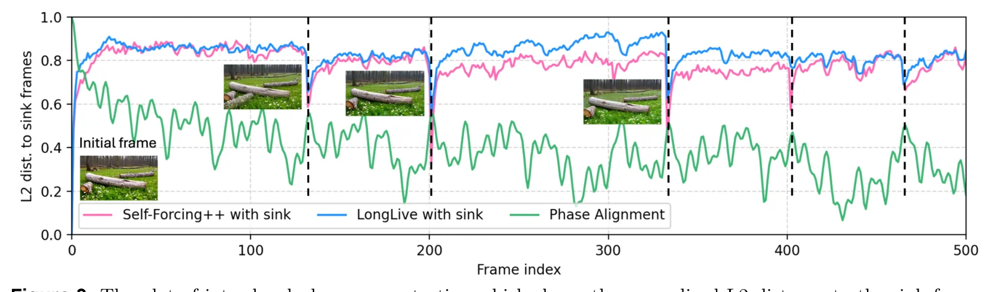
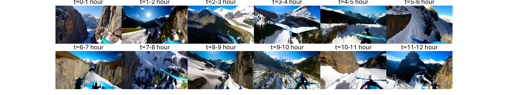
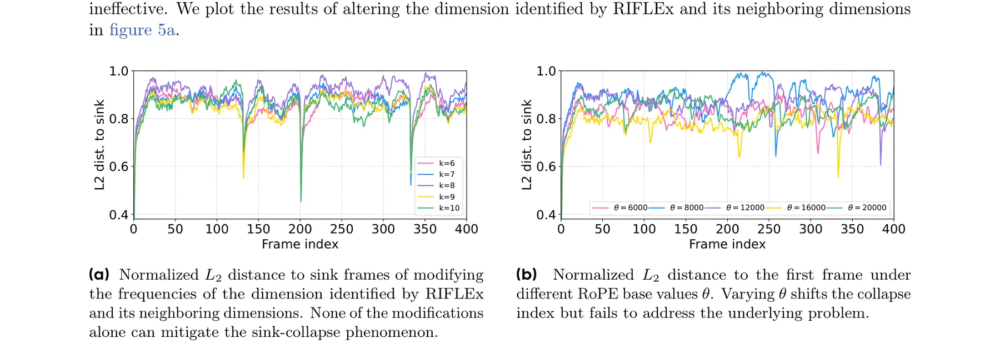
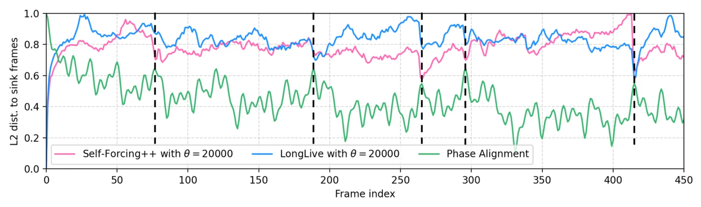
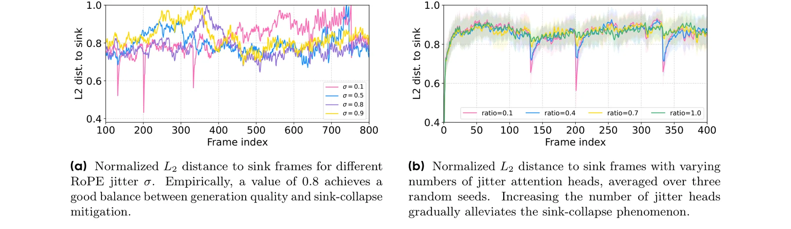
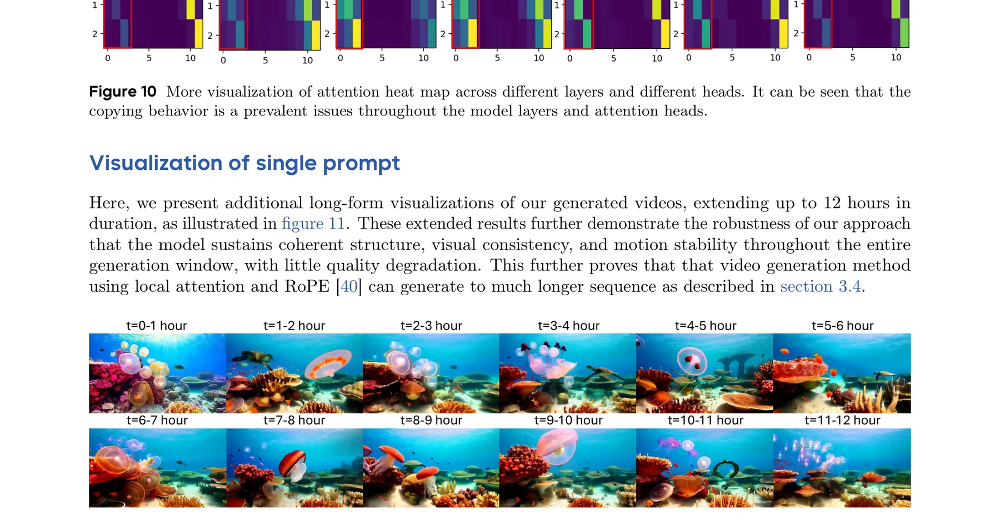
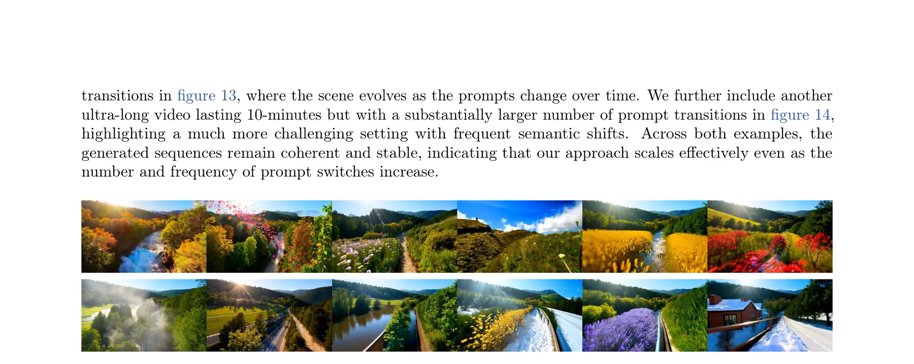
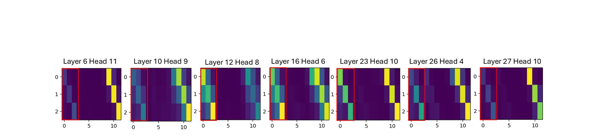
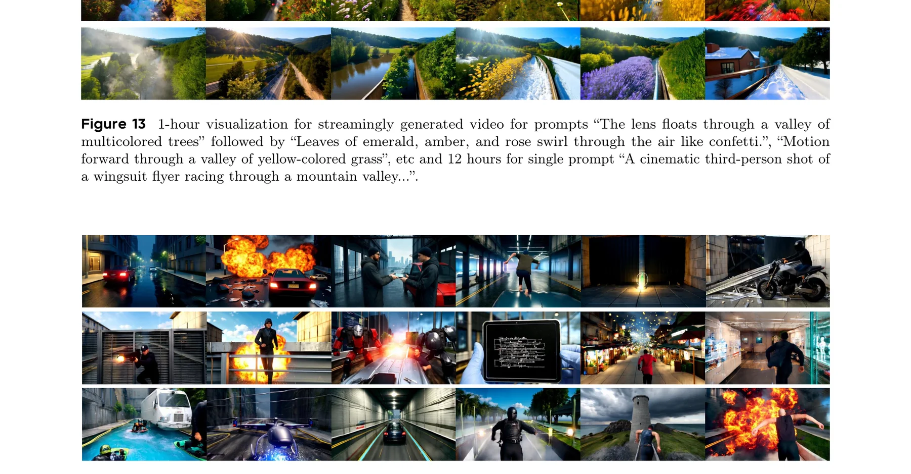

背景动机：超长视频生成的三重困境
视频生成领域正经历从双向扩散到自回归范式的深刻转变。Sora、Wan、CogVideoX 等系统虽然展现了惊人的时空动态建模能力，但它们均依赖双向注意力扩散 Transformer（DiT）——所有帧同时去噪，计算复杂度随序列长度二次增长，从根本上限制了长视频的生成。
为突破这一瓶颈，近期工作转向自回归架构，逐帧顺序生成以支持更长的时间建模。Diffusion-Forcing 应用逐帧噪声调度；CausVid 通过非对称蒸馏将双向教师转化为流式学生；Self Forcing 通过分布对齐缓解训练-测试不匹配；LongLive 和 Self-Forcing++ 更将高质量生成扩展到数分钟级别。然而，这些方法共同面临一个关键失败模式：Sink-Collapse（注意力沉没坍塌）。
从数分钟到数小时的跨越不仅仅是"生成更多帧"。现有方法在约132个潜帧（约33秒）处就会发生Sink-Collapse——生成的画面突然跳回到开头的"注意力沉没帧"。这不是简单的质量退化，而是一种结构性失败：模型的注意力机制在特定时间点发生集体坍塌，所有注意力头同时将过度权重分配给沉没帧。解决这个问题是实现小时级生成的关键。
图1：Sink-Collapse现象示意。当生成到特定帧索引时，L2距离骤降至零，画面突然跳回到开头的注意力沉没帧。
这种困境的根源在于三个相互交织的因素：自回归生成的误差累积、注意力沉没帧机制的副作用、以及位置编码的内在周期性。LoL 论文系统地分析了这一问题，并提出了一种极其简洁的解决方案。
注意力沉没帧（Attention Sink）最初由 StreamingLLM 提出，用于在 LLM 中保持 KV 缓存的稳定性。在视频生成中，保留前几帧作为沉没帧可以增强时序对齐和生成稳定性。但这个机制本身就是一个定时炸弹——当 RoPE 位置编码的周期性导致远距离帧与沉没帧的相位重新对齐时，注意力机制会将"稳定"错误地转化为"复制"，导致画面突变。
RoPE 旋转位置编码回顾：周期性的代价
理解 Sink-Collapse 的根源，需要深入理解 Rotary Position Embedding (RoPE) 的工作原理。RoPE 由苏剑林提出，已成为 Transformer 架构中最广泛使用的位置编码方案之一。其核心思想是通过旋转查询和键向量来编码位置信息。
RoPE 的数学原理
对于位置索引 $t$ 和通道维度 $i$，RoPE 定义旋转角度 $\theta_i = \theta^{-2i/d}$，其中 $d$ 为隐藏维度，$\theta$（通常为10000）控制基频。旋转矩阵为：
旋转后的查询和键向量为 $q'_m = R(m, i) \cdot q_m$，$k'_n = R(n, i) \cdot k_n$。计算注意力时，旋转形式的点积为：
关键性质：注意力分数仅取决于位置差 $n - m$，天然编码了相对位置信息。但 $\cos$ 和 $\sin$ 的周期性意味着当 $n - m$ 增大到特定值时，旋转角度会重新对齐——这正是 Sink-Collapse 的数学根源。
图2：RoPE 不同频率维度的正弦波形。当所有频率的相位在特定位置差处同时重新对齐时，远距离帧获得与沉没帧几乎相同的位置编码，导致 Sink-Collapse。
RoPE 的正弦周期性在短距离上是优势——它让模型感知相对位置。但在长距离上，$\cos(t \cdot \theta_i)$ 会在 $t = 2\pi / \theta_i$ 的整数倍处回到相同值。单个维度的相位重对齐影响有限，但当多个维度同时在相近位置发生相位重对齐时，就会产生"相位集中"（Phase Concentration），使远距离帧获得与沉没帧几乎相同的注意力权重。这就像钟表的时针、分针、秒针偶尔会在同一方向重合——概率虽低，但在足够长的时间线上必然发生。
值得注意的是，这种周期性在双向模型（如 RIFLEx 中的重复现象）中已有研究，但 RIFLEx 将其归因于单一时间维度并通过修改该维度的频率来解决。LoL 论文的关键发现之一是：在自回归设置中，Sink-Collapse 并非由单一维度导致，而是所有维度相位集中的集体效应，这使得 RIFLEx 式的单维度修复完全无效。
Sink-Collapse 深度解析：双重机制的揭示
LoL 论文对 Sink-Collapse 进行了系统的双重机制分析，揭示了这一现象的精确数学根源。这一分析不仅解释了为什么现有方法失败，更为解决方案提供了直接指导。
机制一：头内相位集中（Intra-head Phase Concentration）
论文定义了相位相干核来量化所有 RoPE 频率维度的集体相位对齐程度。给定 RoPE 频率 $\omega_i = \theta^{-2i/d}$（$i = 1, \ldots, K$，$K = d/2$），对于相对位移 $\Delta = m - n$：
生成帧 $g$ 相对于沉没帧 $s$ 的相位集中强度定义为 $R_{\text{sink}}(g) = C(g - s)$。当这个值达到局部最大值时，多个 RoPE 频率分量与沉没帧相位同步，导致 Sink-Collapse。
直觉上可能认为 Sink-Collapse 应在 $R_{\text{sink}}$ 的全局最大值处发生，但实际上它发生在局部最大值处。这是因为 Sink-Collapse 的触发不仅取决于相位对齐程度，还取决于当时生成内容的语义状态——某些局部最大值恰好与模型内部的注意力模式产生共振，使得坍塌更加"容易"发生。这也意味着单纯改变 RoPE 基频 $\theta$ 只能移动坍塌点而非消除它。

机制二：头间注意力同质化（Inter-head Attention Homogenization）
现代 Transformer 依赖多头注意力来捕获多样化的表征子空间。论文的分析揭示了一个关键现象：Sink-Collapse 并非由单个注意力头引起，而是一种集体同步现象——多个注意力头同时表现出对沉没帧的高权重，导致注意力多样性全面退化。
图5：从相位集中到注意力坍塌的因果链，以及多头RoPE抖动的解法原理。
RIFLEx 在双向模型中通过修改最接近重复周期的单一 RoPE 维度频率来解决问题。但在自回归设置中，Sink-Collapse 是所有维度集体相位对齐的结果。论文实验表明，无论是修改 RIFLEx 识别的维度还是任何其他单个维度，都无法有效缓解坍塌。修改 RoPE 基频 $\theta$ 也只能移动坍塌点而无法消除它。这揭示了双向和自回归模型中重复现象的根本差异：前者源于单维度，后者源于多维度的协同效应。
核心方法：多头 RoPE 抖动（Multi-Head RoPE Jitter）
基于以上双重机制分析，LoL 提出了一个极其简洁的解决方案：多头 RoPE 抖动。核心思想是：既然 Sink-Collapse 需要所有注意力头同时与沉没帧相位对齐，那么通过给不同注意力头施加微小的、随机的基频偏移，就能打破这种全局同步，从根本上阻止坍塌的发生。
算法描述
给定查询和键张量 $Q, K \in \mathbb{R}^{B \times T \times H \times D}$，基频 $\theta_0$ 和抖动尺度 $\sigma_\theta$：
其中 $\nu_i = -2i/d_{\text{time}}$ 为频率指数。关键在于：每个注意力头获得一个略微不同的基频 $\hat{\theta}_h$，使得不同头的相位对齐点在时间轴上分散开，不再同时触发坍塌。
import torch import torch.nn as nn class MultiHeadRoPEJitter(nn.Module): """LoL: Multi-Head RoPE Jitter for mitigating sink-collapse. Shifts the base frequency of different attention heads by a random margin, disrupting inter-head phase synchronization that causes sink-collapse in autoregressive video generation. """ def __init__(self, dim, max_position=2048, base=10000.0, sigma=0.8): super().__init__() self.dim = dim self.base = base self.sigma = sigma # jitter intensity σ_θ self.max_position = max_position def forward(self, q, k, num_heads): """Apply per-head RoPE with jittered base frequencies. Args: q, k: [B, T, H, D] query and key tensors num_heads: number of attention heads H Returns: q_rot, k_rot: rotated query and key tensors """ B, T, H, D = q.shape freq_exponents = torch.arange( 0, D // 2, device=q.device ) * (-2.0 / D) # ν_i = -2i/d # Generate per-head jitter: ε_h ~ U[-1, 1] eps = torch.rand(H, device=q.device) * 2 - 1 # Jittered base: θ̂_h = θ₀(1 + σ_θ · ε_h) theta_hat = self.base * (1 + self.sigma * eps) # Per-head frequencies: ω_h = [θ̂^ν₀, ..., θ̂^ν_{D/2-1}] freqs = theta_hat[:, None] ** freq_exponents[None, :] # freqs shape: [H, D/2] # Build rotation angles: t * ω_h t = torch.arange(T, device=q.device).float() # angles: [T, H, D/2] angles = t[:, None, None] * freqs[None, :, :] angles = angles.expand(B, -1, -1, -1) # Apply rotation via complex multiplication cos_a = torch.cos(angles) sin_a = torch.sin(angles) q_rot = apply_rotary(q, cos_a, sin_a) k_rot = apply_rotary(k, cos_a, sin_a) return q_rot, k_rot
抖动强度 $\sigma$ 控制了基频扰动的幅度。过小的 $\sigma$（如 0.1）不足以打破相位同步，坍塌仍然发生；过大的 $\sigma$ 会破坏位置编码的正常功能，导致运动动力学退化。$\sigma = 0.8$ 在消融实验中表现出最佳平衡：它使不同头的基频变化范围为 $[0.2\theta_0, 1.8\theta_0]$，足以将各头的相位对齐点分散到不同位置，同时保留足够的一致性来维持正常的注意力模式。
为什么这个方法如此优雅？
图6：多头RoPE抖动将原本同步的相位对齐点分散到不同时间位置，有效阻止注意力坍塌。
无限流式生成：从分钟到无穷
解决 Sink-Collapse 只是实现超长视频生成的第一步。LoL 还需要克服另外两个约束：RoPE 的序列长度限制和 VAE 解码的内存瓶颈。论文利用当前架构的两个内在特性实现了真正的无限生成。
关键支撑特性
基于这两个特性，LoL 的无限流式生成策略非常简洁：
class InfiniteStreamingGenerator: """Infinite-length streaming video generation. Combines multi-head RoPE jitter with dynamic noise sampling and sliding-window VAE decoding. """ def __init__(self, model, rope_jitter, vae, window_size=12, sink_frames=3): self.model = model self.rope_jitter = rope_jitter self.vae = vae self.window_size = window_size # local attention N self.sink_frames = sink_frames # sink token count self.kv_cache = None self.frame_count = 0 def generate_next_frame(self, prompt_embedding): """Generate a single frame with streaming updates.""" # 1. Sample fresh initial noise noise = torch.randn(1, self.vae.latent_channels, self.vae.h, self.vae.w) # 2. Apply multi-head RoPE jitter # (replaces standard RoPE in all DiT layers) self.rope_jitter.rejitter() # new ε_h each frame # 3. Autoregressive denoising (4 steps) latent = noise for t in [1000, 750, 500, 250]: latent = self.model.denoise_step( latent, t, kv_cache=self.kv_cache, prompt=prompt_embedding ) # 4. Update KV cache (sliding window) new_kv = self.model.get_kv(latent) if self.kv_cache is None: self.kv_cache = new_kv else: # Keep sink frames + most recent window self.kv_cache = torch.cat([ self.kv_cache[:self.sink_frames], # sink self.kv_cache[self.sink_frames:][-self.window_size+self.sink_frames+1:], new_kv ], dim=0) # 5. Sliding-window VAE decode pixel_frame = self.vae.decode_sliding(latent) self.frame_count += 1 return pixel_frame def generate_infinite(self, prompt): """Yield frames indefinitely.""" prompt_emb = self.encode_prompt(prompt) while True: # truly infinite! frame = self.generate_next_frame(prompt_emb) yield frame
图7：LoL 无限流式生成架构。每帧独立采样噪声、应用 RoPE 抖动、去噪、更新 KV 缓存并滑动窗口解码。
很多人忽略了局部注意力在无限生成中的关键作用。全局注意力的 KV 缓存会线性增长导致内存爆炸，而局部注意力窗口（N=12）使 KV 缓存大小保持恒定。结合 RoPE 的相对位置特性——点积仅依赖相对位移——局部窗口内的位置编码永远不会"过期"。这意味着只要 Sink-Collapse 被抑制，模型理论上可以无限生成。LoL 的贡献在于解除了最后一个瓶颈，使这个理论潜力变为现实。
实验结果：全面超越的定量分析
论文在两个最先进的超长视频生成模型（LongLive 和 Self-Forcing++）上进行了全面评估，对比了多种位置编码扩展方法。
核心指标：Sink-Collapse 分数
论文采用比 RIFLEx 更严格的测量方式：在整个生成范围内计算归一化 L2 距离的最大下降幅度，包含两个指标：
LongLive 上的主实验结果
| Method | SC-Max ↓ | SC-Avg ↓ | Dyn.Deg ↑ | Text Align | Temp.Quality |
|---|---|---|---|---|---|
| PE (朴素外推) | 73.06 | 30.54 | 34.62 | 28.09 | 88.56 |
| PI (位置插值) | 4.97 | 2.27 | 0.35 | 24.62 | 85.25 |
| NTK | 41.11 | 11.64 | 28.72 | 27.98 | 87.95 |
| YARN | 11.17 | 5.08 | 2.67 | 28.02 | 85.17 |
| RIFLEx | 70.95 | 29.93 | 35.11 | 23.11 | 88.61 |
| Ours (LoL) | 16.67 | 3.93 | 35.27 | 27.80 | 88.69 |
此前所有方法都面临一个两难困境：抑制坍塌（PI/YARN）会导致运动停滞，而保持运动（PE/RIFLEx）则无法抑制坍塌。LoL 首次同时实现了低坍塌分数（SC-Avg=3.93）和高运动度（Dyn.Deg=35.27，与原始 PE 的 34.62 几乎相同）。这一突破的核心在于：抖动只是微妙地偏移了不同头的相位对齐点，而非像 PI 那样粗暴地压缩整个位置编码空间。
与其他自回归模型的对比
| Model | 75s Text↑ | 75s Temp.Q↑ | 75s Dyn.Deg↑ | 100s Dyn.Deg↑ |
|---|---|---|---|---|
| NOVA | 23.37 | 86.32 | 31.24 | 31.09 |
| MAGI-1 | 24.95 | 87.89 | 24.82 | 22.21 |
| SkyReels-V2 | 22.70 | 88.99 | 39.89 | 38.75 |
| CausVid | 24.76 | 89.14 | 35.82 | 34.60 |
| Self Forcing | 23.39 | 87.79 | 29.15 | 26.41 |
| Self-Forcing++ | 26.31 | 91.00 | 55.62 | 54.12 |
| LongLive | 28.08 | 88.64 | 35.14 | 34.62 |
| SF++(LoL) | 27.39 | 93.08 | 81.30 | 81.20 |
| LongLive(LoL) | 27.85 | 88.78 | 35.77 | 35.27 |

图9：各方法在四项核心指标上的对比。LoL 独特地实现了坍塌抑制与运动丰富度的双赢。
消融研究：深入理解每个设计选择
论文进行了四组消融实验，逐一验证每个关键设计选择的必要性，进一步支持了 Sink-Collapse 多维度集体效应的分析结论。
消融1：单维度修复是否有效？
修改 RIFLEx 识别的维度（k=8）及其邻近维度的频率，观察 Sink-Collapse 是否缓解：

RIFLEx 的思路是"找到导致重复的最近频率维度并修改它"。但这隐含了一个假设：重复是由单一维度的周期性主导的。论文的实验证伪了这一假设——即使同时修改 k=6 到 k=10 五个维度，Sink-Collapse 依然发生。这说明坍塌是一个涌现性质（emergent property），来自所有维度的集体相位行为，无法通过局部修改来解决。这与深度学习中许多"非局部"现象（如注意力坍塌、表征坍塌）有着深刻的结构相似性。
消融2：改变 RoPE 基频 θ 能否解决？
将基频从 6000 变化到 20000，观察效果：

消融3：抖动强度 σ 的影响
系统地测试不同抖动强度的效果：

import numpy as np def compute_phase_concentration( rope_base=10000.0, dim=64, max_frame=800 ): """Compute phase coherence kernel C(Δ) from Eq.(5). C(Δ) = |1/K * Σ exp(j·ωᵢ·Δ)| High values indicate multi-frequency phase alignment with sink frames, predicting sink-collapse locations. """ K = dim // 2 # RoPE frequencies: ωᵢ = θ^(-2i/d) freq_exponents = np.arange(K) * (-2.0 / dim) omega = rope_base ** freq_exponents # [K] # Compute C(Δ) for all frame displacements delta = np.arange(1, max_frame) # relative displacement # Phase: exp(j·ωᵢ·Δ) for each frequency phase = np.outer(delta, omega) # [T, K] complex_phase = np.exp(1j * phase) # Coherence: |mean over K dimensions| C_delta = np.abs(complex_phase.mean(axis=1)) # Find local maxima (potential collapse points) local_maxima = [] for i in range(1, len(C_delta) - 1): if (C_delta[i] > C_delta[i-1] and C_delta[i] > C_delta[i+1]): local_maxima.append((i+1, C_delta[i])) # Sort by concentration intensity local_maxima.sort(key=lambda x: x[1], reverse=True) return C_delta, local_maxima # Usage: predict collapse locations C, peaks = compute_phase_concentration( rope_base=10000, dim=64, max_frame=500 ) print("Top predicted collapse points:") for frame, intensity in peaks[:5]: print(f" Frame {frame}: C(Δ) = {intensity:.4f}") # Expected output includes frames near 132 and 201
消融实验共同指向一个深层结论：Sink-Collapse 的根源是多维度的集体相位同步，而非任何单一因素。这意味着"对症下药"的局部修改（改单维度、调基频）注定失败，而"打破集体同步"的全局策略才能奏效。LoL 的抖动方法之所以成功，恰恰因为它是一个分布层面的干预——通过给每个头注入独立的随机性，确保不可能所有头同时达到相位对齐。这类似于 MCMC 中的 Metropolis-Hastings 技巧：适当的随机扰动反而能增强系统的遍历性。
消融4：抖动注意力头的比例
论文还测试了只抖动部分注意力头的效果。结果表明，随着抖动头比例的增加，Sink-Collapse 逐渐缓解，抖动所有头效果最佳。这进一步证实了问题的集体性质——只要有一个未抖动的头保持同步相位，它就可能成为坍塌的"薄弱点"。
论文使用三个不同随机种子进行实验并报告聚合结果与标准差。这一细节很重要：如果抖动效果高度依赖于随机种子的选择，那么方法的可靠性就值得怀疑。实验显示标准差很小，说明抖动方法是统计上鲁棒的——无论具体扰动如何，只要扰动足够大且覆盖所有头，坍塌就能被有效抑制。这为实际部署提供了信心。
讨论与局限性：通往更好视频生成的道路
LoL 虽然取得了突破性进展，但论文作者坦诚地讨论了多个局限性和未来方向，这些思考同样具有重要价值。
当前局限


LoL 揭示了一个更深层的问题：RoPE 的周期性本质上与无限序列生成存在张力。正弦/余弦函数的周期意味着"足够长的序列总会触发相位重对齐"，而多头注意力的集体效应使问题更加严重。未来可能需要从根本上重新思考位置编码——例如非周期性编码（如对数编码）、可学习的自适应编码、或者完全抛弃显式位置编码。这是一个具有广泛影响的开放问题，不仅影响视频生成，也影响长上下文 LLM。
未来方向
论文指出了多个有前景的研究方向：
1. 非周期性位置编码：探索不具有正弦周期性的位置编码方案，从根本上解决相位重对齐问题。
2. 训练策略增强：在训练阶段利用相位集中信息，在局部最大值处屏蔽沉没帧，引导模型学习更鲁棒的注意力模式。
3. 稀疏/线性注意力：结合 Sana-Video 等方法的块线性注意力机制，进一步提升效率和可扩展性。
4. 更强的基础模型：在更大参数量（如 7B、14B）的视频生成模型上验证和扩展方法。
5. 控制信号集成：通过更强的控制信号（如轨迹指令、深度图）增强可控性。
LoL 作为无训练方法的价值不仅在于节省计算资源，更在于它提供了一种即时修复的能力：任何使用 RoPE 的自回归视频模型都可以立即受益。这与 LLM 领域的推理时优化（如 Speculative Decoding、KV Cache Compression）形成了有趣的呼应。在基础模型快速迭代的时代，不需要重新训练就能改善已有模型的推理时方法具有极高的实践价值——它们可以"搭乘"基础模型升级的便车，持续获益。
总结：从不可能到日常的12小时视频
LoL 论文完成了一次优雅的科学叙事：从观察到问题（Sink-Collapse）、分析根因（RoPE 周期性 + 多头注意力同质化）、提出解决方案（多头 RoPE 抖动）、到实现突破性结果（首次12小时连续视频生成）。整个方法仅需修改几行 RoPE 计算代码，无需任何额外训练。


这篇论文的核心启示超越了视频生成领域本身：理解问题的精确数学机制，往往能发现极其简洁的解决方案。在深度学习日益复杂的今天，LoL 用几行代码解决了数百万参数模型的根本缺陷，这种"四两拨千斤"的优雅正是好的研究应有的样子。
LoL 的技术线索可以追溯到 StreamingLLM（2024）发现的"注意力沉没"现象——LLM 中前几个 token 会获得异常高的注意力权重。LongLive 将这一概念引入视频生成以增强稳定性，但引入了新的坍塌问题。LoL 则揭示并解决了这一副作用。这条从"发现现象→迁移应用→揭示新问题→解决新问题"的技术传承链，展示了基础研究如何通过跨领域迁移和问题深化来推动进步。
开放科研问题
理论分析：RoPE 的正弦周期性是 Sink-Collapse 的数学根源。对数编码 $\theta_i = \log(1 + i)$、多项式编码 $\theta_i = (1 + i)^{-\alpha}$ 或可学习的自适应编码可能从根本上消除周期性相位重对齐。但需要验证这些替代方案是否保留 RoPE 在短距离上的优秀相对位置感知能力。
调查方向：系统比较周期性 vs 非周期性编码在不同序列长度下的注意力模式；分析非周期性编码对模型训练收敛性的影响；探索混合方案——短距离用 RoPE、长距离用非周期性编码。
理论分析：LoL 基于 1.3B 模型实验。更大的模型通常具有更多的注意力头和更丰富的表征子空间，理论上可能对相位同步有更强的"抵抗力"——即使多数头同步，仍可能有少数头维持多样性。但也可能因为更深的网络层导致更严重的注意力同质化。
调查方向：在 Wan-7B、CogVideoX-9B 等模型上复现 Sink-Collapse 实验；分析注意力头数量与坍塌严重程度的关系；研究模型规模是否改变了单维度 vs 多维度坍塌的主导性。
理论分析：LoL 论文提到可以在训练时在相位集中最大值处屏蔽沉没帧。这类似于 Transformer 中的 dropout 策略——随机丢弃某些注意力连接以增强鲁棒性。如果模型在训练时就"学会"不依赖沉没帧，可能无需推理时的抖动。
调查方向：设计基于 $C(\Delta)$ 的自适应屏蔽策略；比较训练时屏蔽 vs 推理时抖动的效果差异；探索两者结合是否能进一步提升性能。
理论分析：Sink-Collapse 在视频生成中的表现——远距离 token 获得与初始 token 近似的位置编码——在 LLM 长上下文推理中同样可能发生（虽然表现形式不同）。多头 RoPE 抖动可能有助于改善 LLM 在超长上下文（100K+）中的注意力模式退化问题。
调查方向：在 LLaMA、Qwen 等模型的长上下文设置下测试多头 RoPE 抖动；分析 LLM 中是否也存在类似的多头注意力同质化现象；评估抖动对 perplexity 和下游任务的影响。
理论分析：LoL 的局部注意力窗口（N=12）虽保证了无限生成的可行性，但也完全丧失了长期记忆。对于多小时视频，需要某种"摘要化"的长期记忆来维持全局一致性。这与 LLM 中的 RAG、外部记忆模块有深层联系。
调查方向：设计轻量级的帧级/场景级摘要模块，维护在 KV 缓存之外；参考 MemoryFormer 等工作探索"记忆压缩"策略；研究在保持实时生成速度的同时引入长期记忆的可行性。